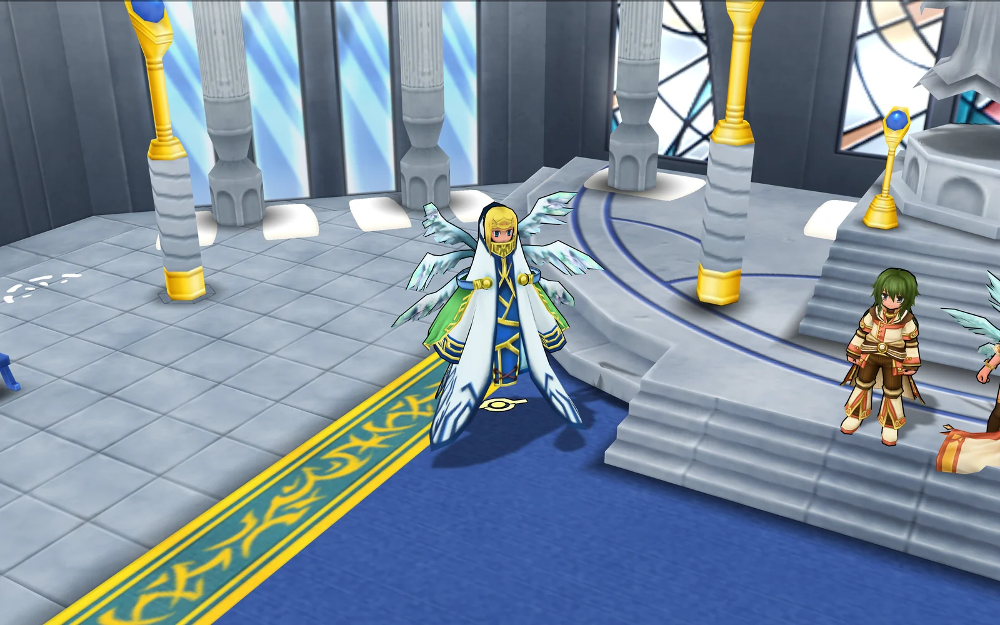
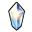
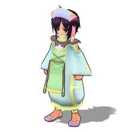

On this page
Job change
Requirement: MAG 30 or higher and Job Level 30 or higher as a Vates.
- Go to the White Church in Uptown.
-
Talk to the White Church Vates and choose to change jobs. Listen until the conversation ends and accept his challenge.
 White Church Vates
White Church Vates
-
Get a

Piece of Mind. It drops from Angel Feather and Skeleton Archer. Angel Feather lives on North Plateau, North Mountain and Eternal North Boundary.
-
Use the Piece of Mind. It warps you to the Titania Transmission Room.
-
Talk to Titus. He sees the Druid mark on you and sends you back to the White Church Vates.
-
Return to the White Church Vates in the White Church (Uptown). The teleporter in the Titania Transmission Room takes you to the White Church.
- Choose to become a Druid. When asked, take off all your equipment. You are now a Druid.
Job Lv 1 Iron StomachPassive · Max Lv 5
Iron StomachPassive · Max Lv 5
- Improves food item recovery and shortens food item use time.
- The bonus also applies while riding, using the rider's Iron Stomach level.
| Lv | Food recovery bonus | Food use time reduction |
|---|
| 1 | +15% | 15% |
| 2 | +20% | 20% |
| 3 | +25% | 25% |
| 4 | +30% | 30% |
| 5 | +35% | 35% |
Job Lv 1SealActive interrupt/debuff · Max Lv 3
- Interrupts the target if it is currently casting a physical skill, then applies No Physical for a short duration.
- If the target is not casting a physical skill, only a small amount of aggro is added.
- The skill can be reflected.
- Target
- Single target
- Range
- 5
| Lv | MP | SP | Cast time | Cooldown | No Physical duration |
|---|
| 1 | 20 | 6 | 0 sec | 2.5 sec | 2 sec |
| 2 | 24 | 6 | 0 sec | 1.5 sec | 4 sec |
| 3 | 28 | 6 | 0 sec | 0.5 sec | 6 sec |
Job Lv 3Light ContractPassive · Max Lv 3
Raises the Holy elemental attack upper limit and the Holy contract value.
| Lv | Elemental attack upper limit | Contract value |
|---|
| 1 | +5 | +5 |
| 2 | +10 | +10 |
| 3 | +15 | +15 |
Job Lv 5Blinding LightActive ground field · Max Lv 5
- Places a non-stacking light field.
- Characters inside the field take a penalty to hit checks.
- Target
- Ground
- Range
- 6
| Lv | MP | Cast time | Cooldown | Hit-check penalty |
|---|
| 1 | 5 | 0.5 sec | 0.5 sec | -10 |
| 2 | 16 | 0.5 sec | 0.5 sec | -20 |
| 3 | 26 | 0.5 sec | 0.5 sec | -30 |
| 4 | 37 | 0.5 sec | 0.5 sec | -40 |
| 5 | 49 | 0.5 sec | 0.5 sec | -50 |
Job Lv 5Undead AnalysisActive debuff · Max Lv 3
- Can only be used on Undead monsters.
- While active, the target's drop rate is increased.
- The same Analysis bonus is also checked by stealing-style loot skills.
- Target
- Undead monster
- Range
- 3
| Lv | Cast time | Cooldown | Drop rate bonus |
|---|
| 1 | 0 sec | 0.5 sec | +10% |
| 2 | 0 sec | 0.5 sec | +20% |
| 3 | 0 sec | 0.5 sec | +30% |
Job Lv 8Increase Undead Property DamagePassive · Max Lv 5
Increases physical and magical damage dealt to Undead-type targets.
| Lv | Damage bonus vs Undead |
|---|
| 1 | +3% |
| 2 | +6% |
| 3 | +9% |
| 4 | +12% |
| 5 | +15% |
Job Lv 10Summon Holy LightActive ground field · Max Lv 5
- Creates a non-stacking Holy elemental circle.
- The circle adds +50 Holy field value to walkable cells in its 3x3 area.
- Target
- Ground
- Range
- 6
| Lv | MP | Cast time | Cooldown | Duration | Holy field value |
|---|
| 1 | 12 | 3 sec | 0.5 sec | 30 sec | +50 |
| 2 | 15 | 3 sec | 0.5 sec | 35 sec | +50 |
| 3 | 18 | 3 sec | 0.5 sec | 40 sec | +50 |
| 4 | 21 | 3 sec | 0.5 sec | 45 sec | +50 |
| 5 | 24 | 3 sec | 0.5 sec | 50 sec | +50 |
Job Lv 13Defeat CurseActive magic attack · Max Lv 3
- Deals Holy magical damage.
- On successful HP damage, applies Avoid Magic Down.
- Target
- Single target
- Range
- 5
| Lv | MP | Cast time | Cooldown | Damage rate | Damage vs Undead | Avoid Magic Down | Duration |
|---|
| 1 | 30 | 3 sec | 0.5 sec | 280% | 330% | -10 | 20 sec |
| 2 | 42 | 2 sec | 0.8 sec | 370% | 445% | -20 | 40 sec |
| 3 | 54 | 2 sec | 1 sec | 460% | 560% | -30 | 60 sec |
Job Lv 15WarmthActive area heal · Max Lv 5
- Heals valid allies in a 7x7 area around the caster.
- The heal ignores defense.
- If Cardinal is active, the heal is stronger.
- Target
- Self-centered area
| Lv | MP | Cast time | Cooldown | Heal rate |
|---|
| 1 | 10 | 1 sec | 1 sec | 210% |
| 2 | 15 | 1.5 sec | 1 sec | 230% |
| 3 | 20 | 2 sec | 1 sec | 260% |
| 4 | 25 | 2.5 sec | 1 sec | 300% |
| 5 | 30 | 3 sec | 1 sec | 350% |
Job Lv 18Light WhirlActive debuff · Max Lv 3
- Attempts to reduce the target's critical hit and critical avoid by 50.
- Adds a small amount of aggro to monsters.
- Target
- Single target
- Range
- 5
| Lv | SP | Cast time | Cooldown | Success chance | Critical hit | Critical avoid |
|---|
| 1 | 20 | 0.5 sec | 0 sec | 50% | -50 | -50 |
| 2 | 20 | 0.5 sec | 0 sec | 75% | -50 | -50 |
| 3 | 20 | 0.5 sec | 0 sec | 100% | -50 | -50 |
Job Lv 20Goddess BlessingActive heal/cleanse · Max Lv 10
- Heals the target and attempts to remove Stun, Poison, Silence, Confusion, Sleep, Stone, Slow, and Frozen.
- If the caster knows the matching Cure skill for a status, that status uses the higher cleanse chance.
- Cannot be used while Chaos Seal is active.
- Target
- Single target
- Range
- 5
| Lv | MP | Cast time | Cooldown | Heal rate | Normal cleanse chance | With matching Cure skill |
|---|
| 1 | 20 | 0.5 sec | 0.5 sec | 0% | 40% | 92% |
| 2 | 22 | 0.5 sec | 0.5 sec | 100% | 45% | 96% |
| 3 | 24 | 0.5 sec | 0.5 sec | 100% | 50% | 96% |
| 4 | 26 | 0.5 sec | 0.5 sec | 170% | 55% | 96% |
| 5 | 28 | 0.5 sec | 0.5 sec | 170% | 60% | 96% |
| 6 | 30 | 0.5 sec | 0.5 sec | 230% | 65% | 99% |
| 7 | 32 | 0.5 sec | 0.5 sec | 230% | 70% | 99% |
| 8 | 34 | 0.5 sec | 0.5 sec | 270% | 75% | 99% |
| 9 | 36 | 0.5 sec | 0.5 sec | 270% | 80% | 99% |
| 10 | 38 | 0.5 sec | 0.5 sec | 300% | 85% | 100% |
Job Lv 23ClairvoyanceActive self-buff · Max Lv 1
Allows the character to target and interact with transparent or hidden targets that would otherwise be ignored by targeting checks.
- Target
- Self
| Lv | MP | Cast time | Cooldown | Effect |
|---|
| 1 | 30 | 1 sec | 0.5 sec | Reveal hidden/transparent targets for targeting |
Job Lv 25Holy FeatherActive area buff · Max Lv 5
- Buffs valid allies in a 7x7 area.
- While active, the target gains +15 HP/MP/SP recovery and also receives MP and SP recovery ticks every 5 seconds.
- Cannot be used while Chaos Seal is active.
- Target
- Self-centered area
| Lv | MP | Cast time | Cooldown | Duration | Recovery bonus | Extra tick |
|---|
| 1 | 35 | 5 sec | 2 sec | 60 sec | +15 HP/MP/SP recovery | MP and SP every 5 sec |
| 2 | 40 | 5 sec | 2.5 sec | 75 sec | +15 HP/MP/SP recovery | MP and SP every 5 sec |
| 3 | 45 | 5 sec | 3 sec | 90 sec | +15 HP/MP/SP recovery | MP and SP every 5 sec |
| 4 | 50 | 5 sec | 3.5 sec | 105 sec | +15 HP/MP/SP recovery | MP and SP every 5 sec |
| 5 | 55 | 5 sec | 4 sec | 120 sec | +15 HP/MP/SP recovery | MP and SP every 5 sec |
Job Lv 25Magic SealActive interrupt/debuff · Max Lv 3
- Interrupts the target if it is currently casting a magical skill, then applies Magic Sealed for a short duration.
- If the target is not casting a magical skill, only a small amount of aggro is added.
- Target
- Single target
- Range
- 5
| Lv | MP | SP | Cast time | Cooldown | Magic Sealed duration |
|---|
| 1 | 20 | 6 | 0 sec | 5 sec | 2 sec |
| 2 | 24 | 6 | 0 sec | 4.5 sec | 4 sec |
| 3 | 28 | 6 | 0 sec | 4 sec | 6 sec |
Job Lv 28Vital RousingActive buff · Max Lv 5
- Buffs the target for 180 seconds.
- Player targets receive VIT, STR, and AGI.
- Non-player targets instead receive percentage-based ATK, S.AVOID, L.AVOID, and DEF bonuses.
- The skill can be reflected.
- Target
- Single target
- Range
- 3
| Lv | MP | Cast time | Cooldown | Player stats | Non-player stats |
|---|
| 1 | 12 | 1 sec | 1.5 sec | VIT +4, STR +3, AGI +7 | ATK/S.AVOID/L.AVOID +12%, DEF +12% |
| 2 | 14 | 1 sec | 1.5 sec | VIT +5, STR +4, AGI +9 | ATK/S.AVOID/L.AVOID +14%, DEF +14% |
| 3 | 16 | 1 sec | 1.5 sec | VIT +7, STR +5, AGI +11 | ATK/S.AVOID/L.AVOID +16%, DEF +16% |
| 4 | 18 | 1 sec | 1.5 sec | VIT +9, STR +6, AGI +13 | ATK/S.AVOID/L.AVOID +18%, DEF +18% |
| 5 | 20 | 1 sec | 1.5 sec | VIT +10, STR +8, AGI +15 | ATK/S.AVOID/L.AVOID +20%, DEF +20% |
Job Lv 30Heavenly BlessingActive elemental buff · Max Lv 5
- Adds Holy elemental defense to the target.
- The buff lasts 50 + 10 x skill Lv seconds and can be applied to valid allies or enemies.
- Target
- Single target
- Range
- 5
| Lv | MP | Cast time | Cooldown | Holy DEF | Duration |
|---|
| 1 | 5 | 2.5 sec | 0.5 sec | +10 | 60 sec |
| 2 | 8 | 2.5 sec | 0.5 sec | +20 | 70 sec |
| 3 | 11 | 2.5 sec | 0.5 sec | +30 | 80 sec |
| 4 | 14 | 2.5 sec | 0.5 sec | +40 | 90 sec |
| 5 | 17 | 2.5 sec | 0.5 sec | +50 | 100 sec |
Job Lv 30Vates SpiritPassive · Max Lv 1
- When possessing another character, grants possession stat bonuses based on the possession slot.
- If the host is using a bow or left handbag in the left hand, that slot is treated like right-hand possession.
| Possession slot | Main bonuses |
|---|
| Right hand | ATK/MATK +14%, S.HIT/L.HIT +14%, Max HP/MP/SP +5% |
| Left hand | ATK/MATK +7%, S.HIT/L.HIT +6%, DEF/M.DEF +14%, Max HP/MP/SP +7.5% |
| Accessory | ATK/MATK +8%, S.HIT/L.HIT +9%, S.AVOID +14%, Max HP/MP/SP +7.5% |
| Armor | ATK/MATK +5%, DEF/M.DEF +7.5%, Max HP/MP/SP +14% |
Job Lv 33Mental RousingActive buff · Max Lv 5
- Buffs the target for 180 seconds.
- Player targets receive DEX, INT, and MAG.
- Non-player targets instead receive percentage-based MATK, M.DEF, and S.AVOID against magic bonuses.
- The skill can be reflected.
- Target
- Single target
- Range
- 3
| Lv | MP | Cast time | Cooldown | Player stats | Non-player stats |
|---|
| 1 | 12 | 1 sec | 1.5 sec | DEX +6, INT +6, MAG +5 | MATK +12%, M.DEF +12%, magic avoid +6 |
| 2 | 14 | 1 sec | 1.5 sec | DEX +8, INT +7, MAG +6 | MATK +14%, M.DEF +14%, magic avoid +7 |
| 3 | 16 | 1 sec | 1.5 sec | DEX +10, INT +8, MAG +7 | MATK +16%, M.DEF +16%, magic avoid +8 |
| 4 | 18 | 1 sec | 1.5 sec | DEX +12, INT +10, MAG +9 | MATK +18%, M.DEF +18%, magic avoid +10 |
| 5 | 20 | 1 sec | 1.5 sec | DEX +14, INT +11, MAG +10 | MATK +20%, M.DEF +20%, magic avoid +11 |
Job Lv 35Possession AccelerationPassive · Max Lv 5
- Reduces possession cast time.
- Base possession cast time is 30 seconds before this reduction.
| Lv | Cast time reduction | Resulting possession cast time |
|---|
| 1 | 3 sec | 27 sec |
| 2 | 6 sec | 24 sec |
| 3 | 9 sec | 21 sec |
| 4 | 12 sec | 18 sec |
| 5 | 15 sec | 15 sec |
Job Lv 40Celestial LightActive magic attack · Max Lv 5
- Deals Holy magical damage only to Undead enemies in a 7x7 area around the caster.
- If the caster has Turn Undead, Celestial Light gains additional damage based on Turn Undead Lv.
- Target
- Self
| Lv | MP | Cast time | Cooldown | Damage rate | With Turn Undead Lv 1-5 |
|---|
| 1 | 60 | 2 sec | 2 sec | 250% | 350% to 550% |
| 2 | 75 | 2.5 sec | 2 sec | 270% | 370% to 570% |
| 3 | 90 | 3 sec | 2 sec | 290% | 390% to 590% |
| 4 | 105 | 3.5 sec | 2 sec | 310% | 410% to 610% |
| 5 | 120 | 4 sec | 2 sec | 330% | 430% to 630% |
Job Lv 40 Spell CancelActive skill · Max Lv 1
Spell CancelActive skill · Max Lv 1
Allows currently casting magic skills to be cancelled.
- Target
- Self
| Lv | SP | Cast time | Cooldown |
|---|
| 1 | 5 | 0 sec | 0.5 sec |
Job Lv 45InspirationActive area heal/attack · Max Lv 5
- Heals valid allies in a 3x3 area around the target point and damages Undead enemies in the same area.
- The effect ignores defense.
- If Cardinal is active, Inspiration gains extra healing and Undead damage based on Cardinal Lv.
- Target
- Ground-centered area
| Lv | MP | Cast time | Cooldown | Healing / Undead damage rate |
|---|
| 1 | 17 | 1.5 sec | 1.2 sec | 140% |
| 2 | 24 | 1.5 sec | 1.4 sec | 180% |
| 3 | 31 | 1.5 sec | 1.6 sec | 220% |
| 4 | 38 | 1.5 sec | 1.8 sec | 260% |
| 5 | 45 | 1.5 sec | 2 sec | 300% |
Job Lv 47Increase All ResistanceActive resistance buff · Max Lv 5
Grants resistance flags against Confusion, Frozen, Stun, Poison, Silence, Sleep, Slow, and Stone for the listed duration.
- Target
- Single target
- Range
- 6
| Lv | MP | Cast time | Cooldown | Duration |
|---|
| 1 | 24 | 2 sec | 2 sec | 420 sec |
| 2 | 27 | 2 sec | 2 sec | 540 sec |
| 3 | 30 | 2 sec | 2 sec | 660 sec |
| 4 | 33 | 2 sec | 2 sec | 780 sec |
| 5 | 36 | 2 sec | 2 sec | 900 sec |
Job Lv 50Sacred EmbraceActive area heal/attack/revive · Max Lv 5
- In a 5x5 area, heals living allies, damages Undead enemies, and prepares eligible dead player characters for revival.
- Living allies also receive +15 HP/MP/SP recovery for the listed buff duration.
- Cardinal increases both healing and Undead damage.
- Cannot be used in Ring Death Match or while Chaos Seal is active.
- Target
- Ground
- Range
- 5
| Lv | MP | Cast time | Cooldown | Healing rate | Undead damage rate | Revive HP | Recovery buff duration |
|---|
| 1 | 125 | 5 sec | 7 sec | 280% | 300% | 30% | 30 sec |
| 2 | 145 | 4.5 sec | 6 sec | 320% | 340% | 35% | 50 sec |
| 3 | 165 | 4 sec | 5 sec | 360% | 420% | 40% | 75 sec |
| 4 | 185 | 3.5 sec | 4 sec | 420% | 520% | 45% | 95 sec |
| 5 | 215 | 3 sec | 3 sec | 500% | 600% | 50% | 120 sec |
Equipment


Cosmo and Lovely set
Lv 65Ancient and Poetess set
Lv 75